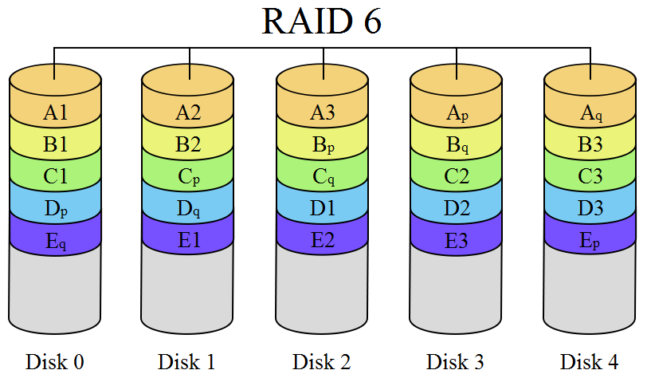

RAID
Redundat Arrays Insexpensive Disksの略ッス
RAIDって？
複数台のハードディスクを組み合わせることで仮想的な1台のハードディスクとして運用し冗長性を向上させる技術
簡単に言うと、安くて低用量のHDDを組み合わせて大容量のHDDの代わりになるストレージ作ろうってことだヨ
RAIDの種類
現在ではRAID０からRAID６までの７種類存在する
ただRAID2,RAID3,RAID4はほとんど使われていないから、今回は説明を省くネ
RAID0
ストライピング
複数のHDDを一つとして扱う
データを分割し別のHDDに保存する
読み書きを並列化することで、高速化してるってことダネ
イメージ図デース
欠点：ドライブの数が増えるほど故障率が増加する
図の中のどちらか一つ(数が増えるとその中の一つ)が故障すれば動かなくなるヨ
RAID1
ミラーリング
複数のHDDに同じデータを保存する
容量の増加は起きないッス

ただし、どれかが壊れても一つでも残ってれば動くッス
欠点：容量の効率が減少(1/N)
RAID0+1
RAID0とRAID1の合わせ技デース
RAID1+0
1台目が故障すると2台目の故障でデータを失う可能師がある
だから0+1のほうが主流になっているヨ
RAID5
水平パリティから複数のHDDに誤り訂正データを配置
専用パリティドライブが不要
パリティって何だ？って感じダネ
以下説明だヨ
パリティ
データ本体の葉損があっても復旧するデータ
符号にはXOR(排他的論理和)が使われる
もっと詳しい説明はココ(ニコニコ大百科)
Ap,Bp...とかがパリティだヨ
RAID6
パリティを2つ使ったRAID
RAID5の長所を持ち、高い障害性がある

ただ、3台壊れると復旧ができないッス
以上でまとめ第3回を終わりマース
TOP